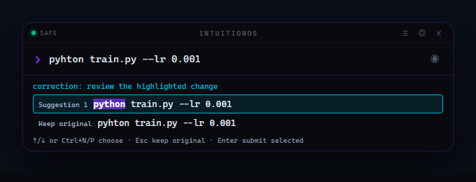
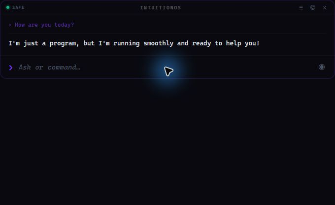

01
Understand perception.
Measure how movement, attention, and experience change our judgments of distance in virtual reality.
PERCEPTUAL SCIENCEHUMAN PERCEPTION × MACHINE INTELLIGENCE
BOSTON, MA / RESEARCH PORTFOLIOSoheil Sepahyar, Ph.D.
I study how we perceive virtual worlds — and build immersive systems that connect human attention with robot learning.
How do we perceive the space around us?

Perceptual science.
Real-time systems. Human potential.
01 / RESEARCH THREAD
THREE DOMAINS. ONE CONNECTED QUESTION.How can what we learn about human perception shape virtual environments and embodied intelligence? My work follows that question from controlled studies to working systems.
Measure how movement, attention, and experience change our judgments of distance in virtual reality.
PERCEPTUAL SCIENCETurn perceptual questions into instrumented VR environments, gaze-aware rendering, and real-time interaction.
IMMERSIVE SYSTEMSCapture human gaze and motion through simulated humanoid teleoperation, creating data for robot-learning research.
EMBODIED AI02 / SELECTED WORK
IDEAS, MADE TANGIBLE.Research software, live experiments,
and systems built from the ground up.
Isaac Sim Humanoid Behavior Lab
A human perspective inside a simulated humanoid. I built a VR teleoperation system for the Unitree H1 that turns synchronized movement and gaze into multimodal research data.
Calibrated binocular gaze is raycast into the PhysX scene with self-hit filtering. Attended objects and 3D gaze-collision points are logged automatically, providing attention labels without manual annotation.
OpenXR head and hand poses drive arm teleoperation, physics-based grabbing, and experimental step-in-place locomotion. Crash-safe sessions align HMD, hands, gaze, object states, joints, and first-person video.
Learning roadmap. These datasets form the foundation for planned work with frozen V-JEPA 2 embeddings, action-conditioned latent world models, and model-predictive control.
FocusWeave
What changes when a virtual world responds to where we look? FocusWeave brings eye-tracked focus and gaze-contingent blur into Unity for perceptual evaluation in VR distance-judgment tasks.
Additional recordings from FocusWeave’s gaze-aware rendering experiments.
IntuitionOS
I’m building a local shell assistant and ambient desktop HUD that learns command patterns, suggests next actions, and shows corrections before submission. IntuitionOS combines local AI, contextual memory, and explicit action review to explore how interfaces can anticipate intent while keeping the user in control.

The Electron HUD and terminal share a Python core. Command history and context inform suggestions, Ollama provides local model inference, and SQLite stores memory. Proposed corrections remain visible before submission; irreversible actions require explicit approval.

03 / SELECTED IMPACT
EXPERIMENTAL RIGOR. PRACTICAL RESULTS.Controlled experiments with high-frequency HMD tracking and reproducible analysis.
Up from approximately 80% in my pre-experiment walking studies.
V-PEDAT automated parsing, plotting, and reports at Visteon.
Teaching and coordinating multiple sections at UMass Boston.
04 / BACKGROUND
A RESEARCHER WHO BUILDS. AN ENGINEER WHO ASKS WHY.My background connects perceptual science, real-time graphics, and applied AI. I care about both the question an experiment asks and the system that makes its answer trustworthy.
At Michigan Technological University, I studied how pre-experiment walking changes distance perception in VR. That meant designing controlled studies, building reliable interactive environments, and turning high-frequency tracking data into interpretable results.
Across three co-op terms at Visteon, I applied the same approach to automotive AI and engineering: reproducible datasets, system integration, and tools that compressed multi-day workflows into minutes.
Today, I teach computer science at UMass Boston while extending my research into gaze-aware rendering and simulated humanoid teleoperation — connecting how people see, how they act, and how machines might learn from both.
Unity / C# / OpenGL / GLSL / Python / NumPy / SciPy / Pandas / Isaac Sim / Omniverse / OpenXR / Docker
UNIVERSITY OF MASSACHUSETTS BOSTON
Teach and coordinate introductory and advanced CS courses. Design curricula, assignments, and projects; build scalable assessment pipelines; mentor student work across theory, systems, software engineering, and VR/AR.
Teaching & mentorship ↘MICHIGAN TECHNOLOGICAL UNIVERSITY
Investigated the impact of pre-experiment walking on VR distance perception. Designed and managed studies with 130+ participants, collected tracking data at approximately 70 Hz, and developed reusable analysis software.
Path integration for cumulative walked distance; turning-point detection using angular velocity; step detection using filtered vertical HMD motion and SciPy peak finding; reusable Python modules for processing and visualization.
VISTEON CORPORATION / THREE CO-OP TERMS
Progressed from ADAS research and AI system integration to a product design technical lead internship, delivering reproducible data pipelines and practical analysis tools.
Built V-PEDAT with Python, Tkinter, Pandas, and Matplotlib. Automated processing of 26,500+ data points and graphs, reducing analysis from multiple days to under five minutes.
Optimized an arm-angle detection algorithm for driver monitoring. Worked with Leica 3D Disto hardware and Mahindra test benches using Python, C, Bash, Docker, and computer vision.
Prepared 60,000+ images for monocular depth estimation, trained PackNet models with Keras and TensorFlow, and used Docker for reproducible research environments.
05 / PUBLICATIONS
SELECTED RESEARCH06 / TEACHING & COMMUNITY
KNOWLEDGE MOVES FORWARD WHEN IT IS SHARED.I teach computer science with an emphasis on conceptual clarity, problem-solving, and real-world application. At UMass Boston, that spans seven courses and approximately 150–200 students each semester.
My work includes curriculum design, Gradescope and custom autograding workflows, coordination across course sections, and responsive student support.
Mentoring student work across theory, systems, software engineering, and VR/AR prototypes.
Ph.D. research
VRSPACE
07 / MAKE CONTACT
THE NEXT QUESTION STARTS A CONVERSATION.For conversations about immersive systems, human perception, embodied AI, or teaching — get in touch.
sepahyarsoheil@gmail.com